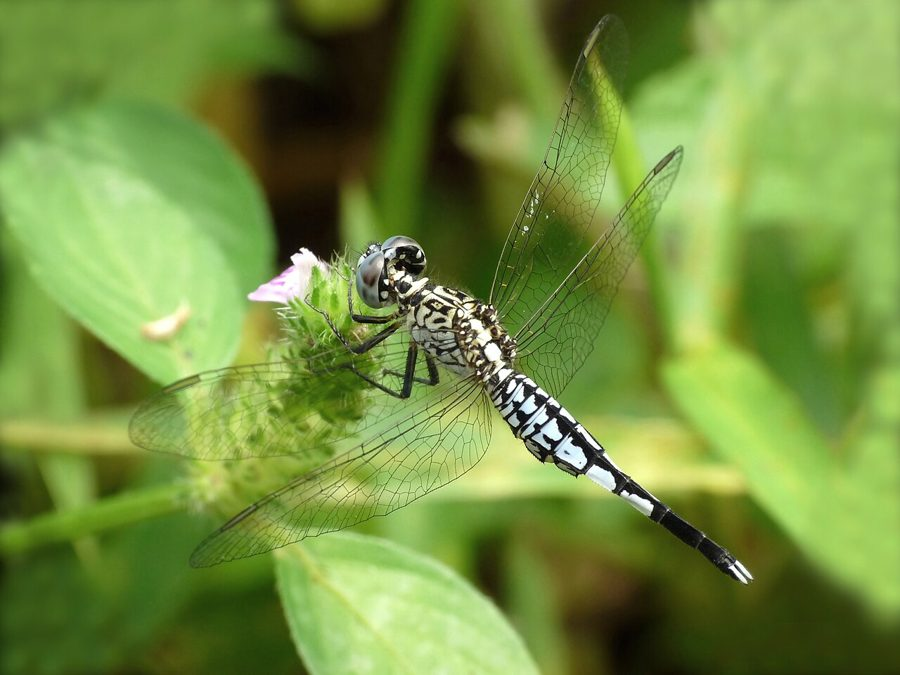

ट्रम्पेट टेलTrumpet Tail
Acisoma panorpoides · Libellulidae · INS-0148

- Scientific name वैज्ञानिक नाम
- Acisoma panorpoides (Rambur, 1842)
- Family कुल
- Libellulidae
- Hindi हिंदी
- ट्रम्पेट टेल
- Local names स्थानीय नाम
- trumpet tail, tail
- Status here यहाँ की स्थिति
- native
- Movement आवागमन
- Resident, here all year
- Known from कहाँ दर्ज
- Others have published records from the wider Awadh–Purvanchal plain, none yet from Basti–Ayodhya अवध–पूर्वांचल से दूसरों के प्रकाशित अभिलेख, बस्ती–अयोध्या से अभी नहीं
- IUCN IUCN
- not evaluated
- Review समीक्षा
- audited and independently read
When to look कब देखें
Present all year. साल भर मौजूद।
ट्रम्पेट टेल / Trumpet Tail
Acisoma panorpoides (Rambur, 1842) — Libellulidae
ट्रम्पेट टेल — एक छोटी व्याधपतंग जिसका सबसे विशिष्ट लक्षण इसकी trumpet या bagpipe के आकार की पूँछ (abdomen) है। नर का शरीर भूरा-लाल और काला होता है। यह उथले, खुली जगहों वाले जलाशयों में पाई जाती है। इसका असामान्य पेट का आकार इसे तुरंत पहचानने योग्य बनाता है।
Quick Identification त्वरित पहचान
| Feature | Description |
|---|---|
| Size | Small dragonfly (body 28–32 mm; wingspan 38–44 mm) |
| Build | Distinctive trumpet or bagpipe-shaped abdomen — very narrow at base, expanded/dilated in middle |
| Colour | Brown to reddish-brown thorax; brown and red abdomen with black markings |
| Abdomen shape | Highly distinctive — narrows at base (segment 1), widens in middle (segments 4–6), narrows again toward tip |
| Behaviour | Weak flight; perches on vegetation or ground |
Field tip: The highly unusual trumpet or bagpipe-shaped abdomen is immediately diagnostic and makes this dragonfly unmistakable among all others in the region.
Morphology आकारिकी
Biometrics:
| Measurement | Range |
|---|---|
| Body length | 28–32 mm |
| Hindwing length | 19–22 mm |
| Wing span | 38–44 mm |
Adult male: Head and thorax brown to reddish-brown with darker markings. The abdomen is the most striking feature: extremely narrow at the base (segment 1–2), expanding markedly at segments 4–6 (the "trumpet" or "bagpipe" widening), then narrowing again toward the tip. Coloration is brown and reddish-brown with black bands. Wings transparent.
Adult female: Similar to male but slightly less brightly coloured.
Behaviour & Ecology व्यवहार और पारिस्थितिकी
Acisoma panorpoides is a small, weak-flying dragonfly of shallow, often vegetation-free or sparsely vegetated ponds and marshes. It prefers open-water habitats and is often found away from dense vegetation, hovering and searching for prey over open water.
Larval Stage
Naiads are small, brown, and found in shallow water. Larval duration is approximately 8–10 weeks. Emergence occurs year-round.
Life Cycle / Phenology जीवन चक्र
| Stage / Season | Event |
|---|---|
| Egg (1–2 weeks) | Laid in shallow open water |
| Naiad (8–10 weeks) | In shallow water; preys on small aquatic invertebrates |
| Emergence (year-round) | Peaks March–May and September–November |
| Adult (2–3 weeks) | Forages over open water; territorial; oviposits |
| Seasonality | Present year-round; activity peaks warm seasons |
Host Plants or Prey आहार
Adult prey:
- Small flies and midges
- Mosquitoes
- Small flying insects
Larval prey:
- Small aquatic insect larvae
- Tiny crustaceans
Predators / Natural Enemies शत्रु
- Birds: Small warblers and flycatchers
- Larger insects: Larger dragonflies
- Spiders: Wetland spiders
- Fish: Fish fry
Agricultural / Human Relevance कृषि प्रासंगिकता
Not documented as a pest. May assist in mosquito control.
Expected Locally स्थानीय रूप से अपेक्षित
Not a field record. Written from published accounts for eastern Uttar Pradesh. No confirmed local sighting yet — if you have seen it, that is what the atlas needs.
अभी तक स्थानीय पुष्टि नहीं। यह विवरण प्रकाशित स्रोतों से है, किसी अवलोकन से नहीं।
GBIF holds published records from the wider Awadh–Purvanchal plain, none yet from Basti–Ayodhya. Expected in shallow, open ponds and marshes throughout eastern UP, year-round. Look for the small dragonfly with the highly distinctive trumpet or bagpipe-shaped abdomen hovering over open water. A photograph showing the characteristic trumpet-shaped abdomen, with date and location, would confirm a local record.
Distribution वितरण
Global range: South and Southeast Asia; widespread from Pakistan and India to Myanmar, Thailand, and Indonesia.
In India: Common in plains.
In Uttar Pradesh: Scattered records in wetlands.
In Basti district / eastern UP: Expected in open wetlands; unconfirmed locally.
Research Questions शोध प्रश्न
Anyone can investigate these | कोई भी इन प्रश्नों की जाँच कर सकता है
- Why has the trumpet-shaped abdomen evolved in this species? — Speculate on hydrodynamics, thermoregulation, or mate recognition.
- पेट का यह आकार संभोग के समय कैसे काम करता है? (How does the trumpet shape function during mating?) — Observe tandem pairs; note how abdomen shape affects positioning.
- Does the trumpet shape affect flight performance? — Observe flight duration, agility compared to other dragonflies.
- How does naiad body shape relate to adult abdomen shape? — Examine naiad morphology; compare to adult.
- खुली जगह वाली जलाशयों में यह प्रजाति ज़्यादा क्यों पाई जाती है? (Why is this species more common in open-water wetlands?) — Compare populations in open vs. vegetated areas.
Similar Species मिलती-जुलती प्रजातियाँ
| Species | Key Difference | हिंदी |
|---|---|---|
| All other regional Libellulidae | No other species has the distinctive trumpet-shaped abdomen | अन्य skimmers (सभी नियमित पेट आकार) |
Field rule: The unique trumpet or bagpipe-shaped abdomen — narrow at base, expanded in middle, narrow again at tip — is instantly recognizable and diagnostic of this species.
Taxonomy & Classification वर्गीकरण
Original description. Rambur described Acisoma panorpoides in 1842. Type locality: India. The genus name Acisoma comes from Greek akis (sharp) + soma (body). The species name panorpoides refers to resemblance to the Panorpidae (scorpionflies), likely referring to the distinctive abdomen shape.
Subspecies. Monotypic.
Family and order placement. Order Odonata, suborder Anisoptera, family Libellulidae.
Phylogenetic notes. Acisoma is a small, primarily Oriental genus. A. panorpoides is characterized by the unique abdominal morphology found nowhere else in Odonata.
IUCN status rationale. Listed as Least Concern (LC). Broad range and stable populations in suitable habitats.
Photo Gallery फोटो गैलरी
No photos yet — add field photos to media/species/trumpet_tail/ and run node scripts/sync_photos.js.
Photos needed आवश्यक फोटो
- [ ] Male showing the distinctive trumpet-shaped abdomen from dorsal view
- [ ] Lateral view showing the expanded middle segments
- [ ] Habitat (open shallow pond)
References संदर्भ
- Rambur, M.P. (1842). Histoire Naturelle des Insectes. Névroptères. Roret, Paris.
- Fraser, F.C. (1933). The Fauna of British India, including Ceylon and Burma. Odonata, Vol. 2. Taylor & Francis, London.
- Subramanian, K.A. (2005). Dragonflies and Damselflies of Peninsular India — A Photographic Guide. Vigyan Prasar, New Delhi.
- Prasad, M. & Varshney, R.K. (1995). A checklist of the Odonata of India. Oriental Insects, 29(1): 385–428.
- IUCN SSC Odonata Specialist Group. (2024). Acisoma panorpoides. IUCN Red List of Threatened Species. Ver. 2024.
- GBIF Occurrence Data — Acisoma panorpoides, Asia (2010–2025).
Source file: species/fauna/insects/trumpet_tail.md